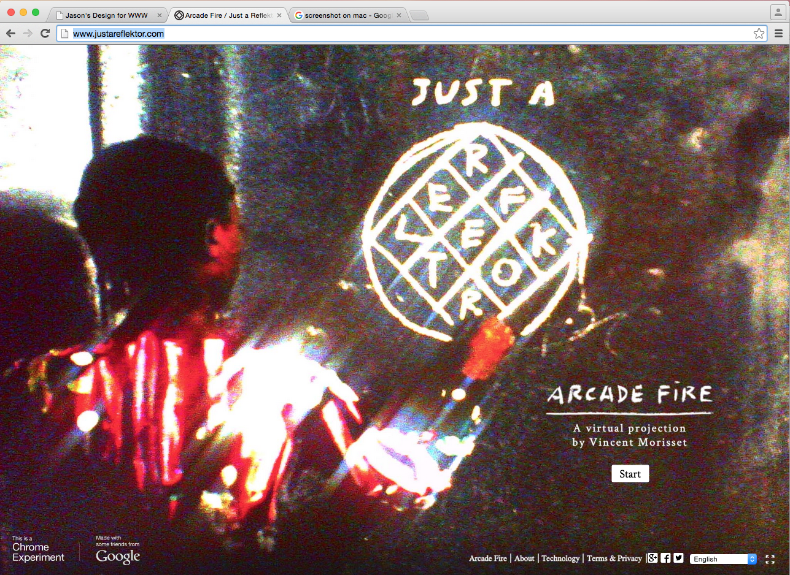

I chose this website because i thought it was quite interesting. They effectively immerse you into the world that they have created. You start of on a screen which asks you if you would like to go on an adventure. Then the website asks to disable your cursor. The website works using your mouse movement to control the camera view while the "w" key makes the figure walk while the "e" key makes the character run and the spacebar makes the character jump; your character can also fly by moving the mouse upward. Clicking and jumping creates tones that blend with the music. Once your adventure begins your are transported to a black and white forest. You are a crudely drawn paper man and you are standing in front of an illuminated path. Your character runs through the black and white forest as a dark character chases you. As you are running it seems as if you are running through a real forrest the whole experience is quite surreal. The website has a very creepy feel to it with the contrast of animation and reality.
